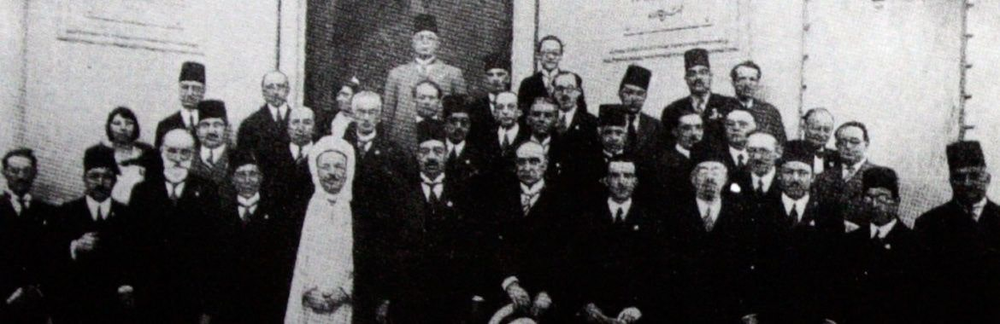

مؤتمر "ثقافات التنوع في مجتمعات ما قبل الاستقلال بالعالم العربي" - إدنبره 2016
مضى أكثر من شهر على عودتي من إدنبره في يوم عاصف وممطر، حيث كادت تفوتني الرحلة الثانية من محطة الترانزيت في لندن. كنت قد ذهبت هناك لأعرض بحثًا في ورشة عن "ثقافات التنوع في مجتمعات ما قبل الاستقلال بالعالم العربي" نظمها مركز العالم العربي للدراسات المتقدمة في إدنبره. كان التناقض واضحًا بين الورشة ومكان إقامتها بحرم جامعة إدنبره التاريخي الجميل من جهة، و"التجديدات" الرأسمالية المعاصرة بالمدينة القديمة من جهة أخرى. كانت المحلات العادية تصطف في الشوارع في جميع أنحاء الحرم المذهل، ليزداد إلحاح السؤال حول كيفية فهم المواريث التاريخية في عالمنا الحالي.
وجاء المفهوم الحديث للذاكرة الوطنية في مصر نتيجة للصراع الاستعماري على المنطقة، ولمشروع الحداثة الذي أسّسه محمد علي. وبين مطرقة بناء هوية وطنية تميّز نفسها عن الحكم العثماني، وسندان مفاهيم الحداثة المستقاة من الغرب، خرجت نماذج مبهرة من الاستيعاب والمقاومة، كما خرج أفراد مهجّنون قد يبدون راديكاليين على نحو استثنائي في عيوننا المعاصرة. وهذا الهجين الراديكالي هو ما حاول العديد من المشاركين بالورشة التعرف عليه.
تنوع المجالات البحثية
تطرقنا إلى العديد من المجالات البحثية، من باكورة الفوتوغرافيا اللبنانية والاستشراق الذاتي والتصورات عن المرأة (ياسمين طعان)، والمشاركة العربية في معرض شيكاجو عام 1893 (كفير ساريكايا)، مرورًا بالترجمة كوسيلة لموضعة الهوية في فلسطين في ظل الانتداب (سارة إرفينج) وصمود الثنائية اللغوية في المغرب (إدريس جباري)، ووصولًا إلى إمكانية أرشفة سيرة النحّال الحداثي متعدد الثقافات أحمد زكي أبو شادي (جوي جارنت).
وبينما يطرح المشاركون أبحاثهم وأفكارهم، كان أول سؤال يخطر على ذهني هو كيف تمكنوا من الوصول إلى هذه المواد. فأنا بصفتي مواطنًا مصريًا، غير قادر على الوصول إلى وثائقي القومية، التي تقع رهينة بين أهوال البيروقراطية المترسخة وأهوال القبضة الأمنية التي أمسكت بمعظم المؤسسات المصرية على مدار العقود الأربعة الماضية، فحتى لو تمكنتُ من اجتياز التدقيق الأمني، سأجد البيروقراطية المترهلة والعقيمة عائقًا أمامي (وجهود خالد فهمي لإتاحة هذه الوثائق بشكل أوسع هي مبادرة شديدة الأهمية).
تساءلتُ عن ماهية المصنوعات والمقتنيات والوثائق والأغراض التي تضمها دار الكتب والوثائق القومية وتشكل خطرًا لدرجة الإغلاق عليها بالضبة والمفتاح؟
لم تقم الأساطير، التي تأسست عليها دول ما بعد الاستقلال، على شيطنة الماضي، بل على رؤيته كانحراف تاريخي، أمر لم يكن ينبغي أن يحدث، أو واقع مؤسف جاءت دولة ما بعد الاستقلال لتصحيحه. وتكمن خطورة الفكرة الساذجة، بأن التاريخ عبارة عن أقسام متفرقة غير متصلة، في ما تنتجه من سرديات مشوهة ومتشظية، يمكن استخدامها للتلاعب بالمواطنين غير المطلعين، وهكذا يمكن تزييف الوعي في سبيل الدعاية السياسية.
مقدمات الثورة وشعرية التمرد
لخّص هذا بالنسبة لي تقديمُ علياء مسلّم لحركات التمرد وأغاني الاحتجاج في فترة ما قبل 1919، "مقدمات الثورة – شعرية التمرد في مصر 1917-1919". هنا نجد حقيقتين كاشفتين لعمق إشكالية تقصي التاريخ بالنسبة للمصريين.
لكن مسلّم نجحت في استعراض البقايا غير المادية لتلك الأحداث، مثل الأغاني والهتافات التي توالى ظهورها على السطح، وكيف كانت هذه البقايا أصواتًا بديلة في ظل الرواية السائدة، أو على الأقل تذكيرًا بالرواية المقموعة، ومع حضورها في ذاكرتنا الثقافية وصمودها يصبح علينا مساءلة أصولها وسبب استمرارها.
تمدين الموسيقى: مؤتمر القاهرة 1932
في مؤتمر للموسيقى أقيم عام 1932، على الأرجح بتوصية من الملك فؤاد الأول وباقتراح من البارون رودولف درلانجر، يتضح تصور النخبة الحاكمة في مصر عن "إعادة بناء" أو "إحياء" التراث الثقافي. في بحثها "تمدين الموسيقى: مؤتمر الموسيقى العربية الأول بالقاهرة عام 1932″. تلقي ريبيكا ولف الضوء على هذا الحدث المهم بمسار الموسيقى العربية، والذي قد يكون الأول من نوعه، وكيف أنه نتج من خلال تعاون غير سلس بين الحداثيين الكلاسيكيين الجدد والمستشرقين المهتمين بالأمر.
في يومنا هذا تبدو لنا دعوة علماء الموسيقى الأوروبيين للعمل، جنبًا إلى جنب الموسيقيين والمؤرخين المصريين للتفكير في مستقبل الموسيقى العربية، أمرًا مريبًا. نتساءل: لماذا وقع عبء "التحديث" على عاتق الرجل الأبيض؟ لكن وقتها لم تكن النظرة النقدية لتدخلات الغرب واضحة كما هي الآن—فقد كان الترحيب بوجود الشخص الأبيض المستنير، بل وحتى الاحتياج له، أمرًا بديهيًا.
ولا شك أن هذا التحديث الفاشل قد فرّخ علاقات تبعية ورعوية على نحو مستمر حتى الآن—فحتى هذه الورشة التي نتحدث عنها قد نظمتها مؤسسة أوروبية.
الصالونات الفرانكوفونية والنخبة الإسفنجية
نجد صدى لتلك التحالفات والصلات بالمثقفين الأوروبيين في بحث حسام أحمد تحت عنوان: "(المحلي) و(الأجنبي) في الدوائر والصالونات الأدبية الفرانكوفونية بمصر". إن كان عبء تحديث الموسيقى العربية وقع على عاتق الحداثيين الأوروبيين والمصريين على حد سواء، فمن المنطقي أن نتقصى شكل العلاقة بينهم، وكيفية رؤية النخبة المصرية لنفسها في مقابل نظيرتها الأوروبية.
ومن خلال نموذج الصالون الثقافي الذي انتشر في أنحاء العالم العربي في القرن التاسع عشر ومشاركة أفراد من جاليات مختلفة، كالإيطاليين واليونانيين والأرمن، الذين جمعتهم اللغة الفرنسية، نتج شدٌ وجذبٌ وتبادل على نحو مثير للاهتمام. يقول أحمد إن هذه الصالونات استضافت نقاشات شارك فيها أبرز المثقفين المصريين، كالكاتب طه حسين ومجموعة Les Essayistes "كُتّاب المقالات" الأصلية، التي تفرعت منها لاحقًا مجموعة "الفن والحرية". نشر هؤلاء المثقفون والفنانون كتاباتهم بالفرنسية، وكانت الصحافة الفرنسية النشطة تهيمن على الساحة الثقافية في مصر لفترة طويلة.
ورغم نخبوية وإقصائية هذه المنشورات والنقاشات على الأرجح –فلم يكن هناك من يمكنه الاطلاع عليها سوى من يجيد الفرنسية– لا يمكننا الزعم أن طه حسين لم يصبح مثقفًا جماهيريًا، ولا أن الفنان والكاتب رمسيس يونان المنتمي لمجموعة الفن والحرية لم يتحول بدوره إلى الجماهيرية أيضًا في النهاية، حيث كان يكتب وينشر بالعربية على نطاق واسع.
استخدم أحمد تعبير "الإسفنجي" لوصف رواد هذه الدوائر، وإذا تمعنا في السياق التاريخي سنفهم سبب اختيار هذا الوصف، فقد كانت أولى المؤسسات التعليمية لدراسة مصر هي مؤسسات العلماء الفرنسيين الذين جاؤوا مع نابليون.
وأول مجموعة من العلماء أرسلها محمد علي في بعثة للدراسة إلى الخارج ذهبت إلى فرنسا، كما كان الكثيرون من نخبة مصر القومية الصاعدة يرون الاصطفاف مع فرنسا وسيلة لمناهضة مصالح الاستعمار البريطاني، وهكذا إلى آخره، حتى أن معظم المراسلات الرسمية كانت بالفرنسية.
الكوزموبوليتانية السكندرية: مصطلح مبتذل أم واقع معقد؟
أما بحث إلينا شيتي بعنوان "هل الكوزموبوليتانية وصف فرانكوفوني سكندري مبتذل؟ نحو تاريخ ثقافي للمصطلح (1879-1940)"، فقد أبرز الأسباب المعقدة لتعريف رواد هذه الصالونات الأدبية من محبي الثقافة الفرنسية لأنفسهم بشكل واضح ومباشر باستخدام وصف "كوزموبوليتاني" المبتذل. رسمت شيتي خريطة المصطلح المعجمية والدلالية، ومعانيه عبر الأزمنة.
ويشير ما توصلتْ إليه إلى أن المعنى المعاصر للكوزموبوليتانية، بوصفها "القدرة على تجاوز الآفاق القومية،" لم يُستخدم قط على يد أيٍ ممن عاشوا في الإسكندرية أنفسهم، وإنما اُستخدم للإشارة إلى عدة أشياء، من بينها التحضر، والتحرر من الروابط الجغرافية، واختلاط الأعراق الخطير وشعب بلا وطن (في إشارة خاصة إلى سكان الإسكندرية من اليهود).
خلاصة: إعادة قراءة التراث والهوية
إن دراسة هذه النخب الهجينة تكشف لنا تعقيدات الهوية الثقافية في فترات التحول التاريخي. فهؤلاء المثقفون والفنانون لم يكونوا مجرد مقلدين للغرب أو منبهرين بحضارته، بل كانوا يحاولون التفاوض مع الحداثة من موقعهم الخاص، محاولين الحفاظ على هويتهم مع الاستفادة من المعارف والتقنيات الجديدة.
وفي الوقت نفسه، تُظهر هذه الدراسات أهمية إعادة النظر في مفاهيمنا المعاصرة عن الأصالة والمعاصرة، والقومية والكوزموبوليتانية. فالتاريخ ليس مجموعة من الفترات المنفصلة، بل سلسلة متصلة من التفاعلات والتبادلات الثقافية التي شكلت واقعنا الحالي.
إن فهم هذه التعقيدات يتطلب منا تجاوز السرديات المبسطة عن الماضي، والبحث عن الأصوات المتعددة والمتنوعة التي شكلت تجربتنا التاريخية، حتى لو كانت هذه الأصوات متناقضة أو مربكة أحياناً.
وأخيراً، تذكرنا هذه الدراسات بأهمية إتاحة الأرشيف والوثائق التاريخية للباحثين والمهتمين، فالتاريخ ملك للجميع، وليس حكراً على السلطة أو النخبة الحاكمة. إن حماية هذا التراث وإتاحته للدراسة والبحث هو جزء أساسي من مشروع التنوير والتقدم الذي نسعى إليه.